Secret and Optional NPC Dialogue
| Optional Conversation # 1 (Secret) Disc: 1 Location: Excavation Site Characters: Gash Criteria: After defeating the Arachnoth and before going to the Village of Cainus, go back to the Excavation Site. Gash will be walking around on foot and you can talk to him. He has 4 different dialogue options. 2 near/close up (yellow cursor) and 2 from far (blue cursor). |
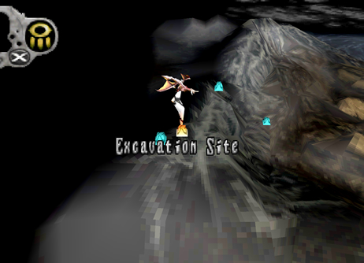 1. Go to the Excavation Site before going to the Village of Cainus. |
2. Dialogue from afar. |
|
3. Dialogue up close. |


| Optional Conversation # 2 Disc: 1 Location: Caravan Characters: Kou and Fei Criteria: After defeating the Gigra go to the Caravan.
After talking to An'jou go into the tent towards the back. Select them
from afar to hear their conversation. Also, be sure to talk to Fei normally,
close up until she talks about traveling outside the village. Once she
asks this 2 more dialogue options from afar will open up. |
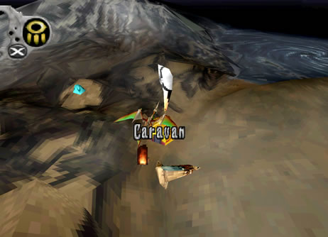 1. Go to the Caravan. |
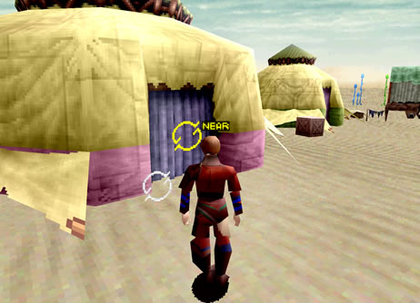 2. Enter Kou and Fei's tent. |
3. Stand far away and select Fei from afar to hear her dialogue. |
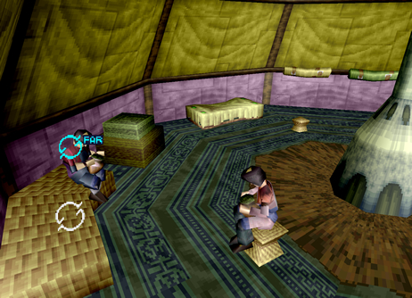 4. Stand far away and select Kou from afar to hear her dialogue. |
| 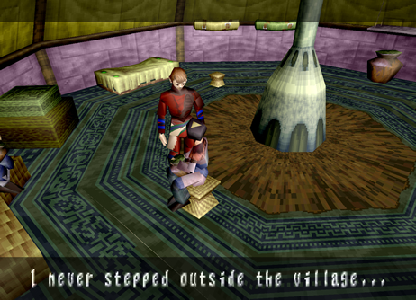 5. Talk to Fei normally up close and 2 more options of dialogue from afar open up. |

| Optional Conversation # 3 (Secret) Disc: 1 Location: Forbidden Zone Characters: Edge Criteria: In the Forbidden Zone you will have to activate 8 keys. Before activating one fly directly below and in front of it. Now activate it and you should be stuck behind it as it moves and get a hidden message from Edge. Now, once all 8 keys are activated they will be spinning in the center of the stage. If you place yourself in front of one just right, so it takes you along with it, you can activate it for another hidden message! |
1. Place the dragon in front of one of the 8 keys and activate it. |
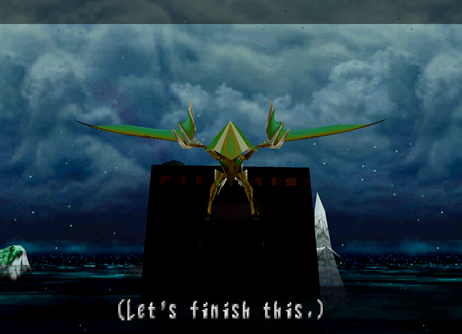 2. You will get a hidden message as you get pushed along! |
3. Once all of the keys are activated, fly in the center, position yourself on the outer edge of one of them until you are circling with the keys. Then, lock-on for another hidden message! |


| Optional Conversation # 4 Disc: 2 Location: Village of Zoah
(Liberal District) Characters: Quitor and
traveller Criteria: When you first visit the Village of Zoah
you will see Quitor standing outside selling grain to a traveller. Stand
back and select them from afar to listen to their conversation. |
1. Examine the Traveler or Quitor from afar to get 2 different dialogue conversations. |
2. They argue over grain. I think Quitor can spare some more don't you think?! |
| Optional Conversation # 5 (Easter Egg) Disc: 2 Location: Village of Zoah
(Liberal District) Upstairs Jub's Bar Characters: None Criteria: At night go to Jub's Bar. Upstairs you
will find a table in the back with a little South Park Easter egg writen
on it. |
1. Examine the table for a South Park Easter egg! |

| Optional Conversation # 6 (Secret) Disc: 2 Location: Georgius Characters: Edge Criteria: Once you get to Georgius and fly inside
the whirlwind, you can fly off to the side to find a lone drone. When
you examine it Edge will comment on the oddity and a bunch of tornadoes
will come and destroy it! |
1. Examine the drone to get Edg's reaction. |
2. It will then be destroyed! |

| Optional Conversation # 7 Disc: 2 Location: Caravan Characters: Kou and Fei Criteria: After returning from Georgius with Paet's
parts go back to the Caravan and enter Kou and Fei's tent. Talk to Fei
normally/up close until she mentions not being afraid of the outside
world and that she misses you. This opens up two more hidden dialogue
options from afar. |
1. Examine Fei or Kou from afar for 2 dialogue conversations. |
2. Talk to Fei normally until she mentions not being afraid. This opens up 2 more dialogue options from afar. |
| Optional Conversation # 8 (Easter Egg) Disc: 2 Location: Caravan Characters: None Criteria: Go into An'jou's tent the one to the
right. Inside you will see a couple guns hanging on the wall. Upon examination
you will get a quick message. This is an easter egg concerning John
Woo movies! |
1. Examine the guns for a John Woo movie Easter egg! |

| Optional Conversation # 9 (Missable after Uru) Disc: 2 Location: Village of Zoah
(Liberal District) Paet's workstation Characters: Paet and Bezer Criteria: Paet will show you an image of Uru and
Azel flying off in the distance. This is your next destination. So,
leave Zoah and enter Uru. Now, immediately leave Uru and go back to
the Village of Zoah and go see Paet again. You can see an optional conversation
between Paet and Bezer from afar. |
1. Examine Bezer or Paet for 2 different conversations. |
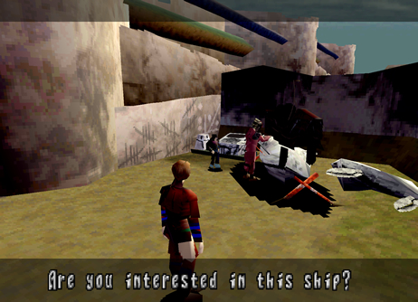 2. Paet asks Bezer if he's interested in Ancient Age ships. |
| Optional Conversation # 10 (Missable after Uru) Disc: 2 Location: Village of Zoah
(Liberal District) Aldo's house Characters: Aldo and Abner Criteria: Paet will show you an image of Uru and
Azel flying off in the distance. This is your next destination. So,
leave Zoah and enter Uru. Now, immediately leave Uru and go back to
the Village of Zoah and to Aldo's house. Right across from Paet. Talk
to Aldo and Abner from afar to hear their conversation. |
1. Examine Aldo or Abner for 2 different conversations. |
2. The Empire is getting closer to the Village of Zoah! |


| Optional Conversation # 11 (Missable after Uru) Disc: 2 Location: Village of Zoah
(Liberal District) Upstairs Jub's Bar Characters: Quitor and
Jephthah Criteria: Paet will show you an image of Uru and
Azel flying off in the distance. This is your next destination. So,
leave Zoah and enter Uru. Now, immediately leave Uru and go back to
the Village of Zoah and go to Juba's Bar at night. Go upstairs to find
Quitor and the Seeker Jephthah. Speak to them from afar to hear their
conversation. |
1. Examine Quitor or Jephthah for 2 different conversations. |
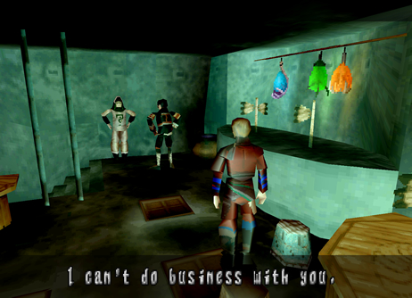 2. The two argue with each other. They're better off having an illuminated drink! |

| Optional Conversation # 12 (Missable after Uru) Disc: 2 Location: Caravan Characters: An'jou and
Enkak Criteria: Paet will show you an image of Uru and
Azel flying off in the distance. This is your next destination. So,
leave Zoah and enter Uru. Now, immediately leave Uru and go back to
the Caravan. Make sure it's nighttime. You will find An'jou and Enkak
sitting outside by the fire. Talk to them from afar to hear their conversation. |
1. Examine An'jou or Enkak for 2 different conversations. |
2. Enkak is curious about stories concerning the dragon. |


| Optional Conversation # 13 (Missable after Uru) Disc: 2 Location: Caravan Characters: Fei and Marcus
the Coolia Criteria: Paet will show you an image of Uru and
Azel flying off in the distance. This is your next destination. So,
leave Zoah and enter Uru. Now, immediately leave Uru and go back to
the Caravan. Make sure it's daytime. You will find Fei washing her favorite
coolia. Speak to them from afar to hear their conversation. |
1. Examine Fei or the Coolia for 2 different conversations. |
2. Fei washes up Marcus, her favorite Coolia! |
| Optional Conversation # 14
Disc: 3 Location: Village of Zoah
(Liberal District) Aldo's house Characters: Aldo and Abner Criteria: Right at the start of Disc 3 go straight
to Zoah and back in front of Aldo's house. If you go to the campsite
and talk to Paet you won't be able to hear this optional conversation.You'll
find Aldo and Abner still sitting here. They have one new thing to say
from afar. |
1. They have one new conversation for you to hear. |

| Optional Conversation # 15
Disc: 3 Location: Village of Zoah
(Liberal District) Inside Aldo's house Characters: Aldo and Edge Criteria: Go to your campsite and talk to Paet.
Next, go to the Excavation Site. Get the Large Gun X1 from Radgam. Now,
go back to Zoah. Before you sell the gun go inside Aldo's house, found
in the far back across from Paet's workstation. Once you enter the house
you have to enter another opening found in the back. This leads to a
back room where you'll find Aldo. Talk to him twice to start the optional
dialogue. Then examine the crate of bottles on the floor to get a Dual
Blast Chip X1. After getting this item talk to Aldo again to start the
second half of the optional dialogue. Answering yes and no will change
the conversation slightly. For instance: if you answer no, Aldo will
kick you out of his house. Once outside, you can go back in to talk
to him again. |
1. First, talk to Paet at camp. This triggers Radgam to appear at the Excavation Site. |
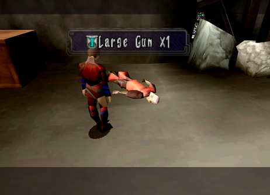 2. Examine Radgam to receive Large Gun X1. Go to Zoah next but don't sell the gun. He doesn't look too good does he... |
3. Go inside Aldo's house to find him in the back. Show him the Gun. |
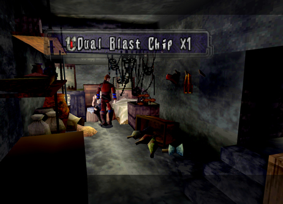 4. Examining the crate on the floor will give you an item. This opens up the next part of the optional conversation. |


| Optional Conversation # 16
Disc: 3 Location: Village of Zoah (Holy District)
Characters: Edna and Quitor's Wife Criteria: Go to the Holy District for the first
time. Once inside, you will see two women sitting outside. Talk to them
from afar to hear 3 different conversations. |
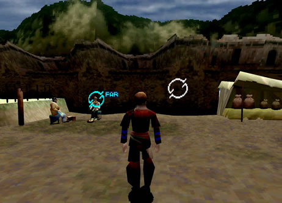 1. Examine one of the two women just outside the entrance to the Holy District. |
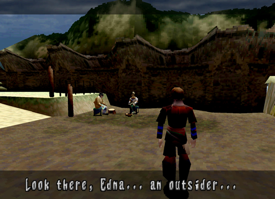 2. They don't like outsiders much! |
| Optional Conversation # 17
Disc: 3 Location: Village of Zoah (Liberal
District) Paet's workstation Characters: Paet and Bezer Criteria: After talking to Viaman for the first
time and returning from the Holy District back to the Liberal District,
go back to Paet's workstation to find him and Bezer working on the small
airship. Talk to them from afar to hear 2 different conversations. |
1. Examine Paet or Bezer from afar to hear their conversation. |
2. They're working overtime on the airship! |


| Optional Conversation # 18
Disc: 3 Location: Village of Zoah (Holy District)
Characters: Edna and Quitor's Wife Criteria: After defeating the Deathmaker boss and
returning from the Imperial Air Force Post, go to the Holy District.
Once inside, talk to Edna and Quitor's Wife again. One new dialogue
option from afar is available. |
1. Examine Edna or Quitor's wife a new conversation from afar. |
2. They're complaining about Bezer. |

| Optional Conversation # 19
Disc: 3 Location: Village of Zoah (Liberal
District) Paet's workstation Characters: Paet and Bezer Criteria: After talking to Viaman and Damon the
High Priest at the church in the Holy District, go back to the Liberal
District and over to Paet's workstation. You will find him along with
Bezer. Talk to them from afar for 3 optional conversations. |
1. Talk to Paet and Bezer after coming back from the Holy District. |
2. Both of them have some pretty bad anger issues! |


| Optional Conversation # 20 (Missable after Mel-Kava) Disc: 3 Location: Village of Zoah (Holy District)
Characters: Edna and Quitor's Wife Criteria: After meeting Craymen at night in Zoah
and before you go to Mel-Kava, go back to the Holy District and talk
to Edna and Quitor's Wife. Two new dialogue options from afar will be
available. |
1. Examine Edna or Quitor's wife for 2 new conversations from afar. |
2. You will find out why they don't like outsiders. |

| Optional Conversation # 21 (Missable after Mel-Kava) Disc: 3 Location: Village of Zoah
(Holy District) Behind the Church Characters: Damon the
High Priest Criteria: After meeting Craymen at night in Zoah
and before you go Mel-Kava, go back to the Holy District and go behind
the chruch. You will find a giant monument there with Damon standing
in front of it. Examine him from afar to listen in on his conversation. |
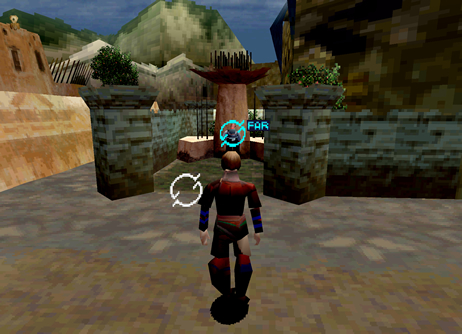 1. Examine Damon to eavesdrop on his personal reflection. |
2. Just like Edna and Quitor's wife, you will find out why they don't like outsiders. |

| Optional Conversation # 22
Disc: 4 Location: Seekers' Stronghold
Characters: Paet and Rhagg Criteria: Upon first visiting the Seeker's Stronghold,
and before talking to Gash and Zadoc in the library, you'll find Paet
and Rhagg a female Seeker by the entrance. Talk to them from afar to
listen to their optional conversation. |
1. Examine Rhagg or Paet to hear their conversation from afar. |
2. Rhagg wants Paet to join the Seekers. |

| Optional Conversation # 23
Disc: 4 Location: Seekers' Stronghold
Characters: Simeon and
Reuben Criteria: Before talking to Gash and Zadoc in the
library, go downstairs and into the purple door. You'll find the Seekers
Simeon and Reuben. Talk to them from afar to hear 2 optional conversations.
|
1. Simeon and Reuben can be found downstairs. |
2. Apparently, Questers are like soldiers or knights in training. |

| Optional Conversation # 24
Disc: 4 Location: Seekers' Stronghold
Characters: Rhagg and
Perez Criteria: After Azel wakes up but before talking
to Gash in the Observatory, go downstairs to find Rhagg and Perez out
in the open. Talk to them from afar to hear their conversation. |
1. You'll find Rhagg and Perez downstairs out in the open. |
2. Perez wants to explore some mysterious ruins in the Forest of Zoah. |


| Optional Conversation # 25
Disc: 4 Location: Seekers' Stronghold
Characters: Simeon and
Reuben Criteria: After Azel wakes up but before talking
to Gash in the Observatory, go back downstairs and into the purple door.
Talk to Simeon and Reuben from afar, to hear 2 new optional conversations. |
1. Talk to Simeon and Reuben before talking to Gash in the Observatory. |
2. Perez wants to explore some mysterious ruins in the Forest of Zoah. |

| Optional Conversation # 26
Disc: 4 Location: Seekers' Stronghold
Characters: Ladha and
Shella Criteria: After Azel wakes up but before talking
to Gash in the Observatory, go back downstairs and into the red door
behind where Rhagg and Perez are standing. Inside you'll find Ladha
and the mute girl Shella. Talk to them from afar to hear their conversation. |
1. Talk to Ladha and Shella in the storeroom. |
2. Shella doesn't talk much. |
| Optional Conversation # 27 (Missable after going to the Forest of Zoah)
Disc: 4 Location: Seekers' Stronghold
Characters:
Ladha Criteria: After talking to Gash in the Observatory
but before going to the Forest of Zoah, go back downstairs and into
the purple door under the ramp. You will find Ladha in front of a giant
statue. This is a normal conversation but it can be missed once you
go to the Forest of Zoah. |
1. Ladha is praying in front of a giant statue. |

| Optional Conversation # 28 (Missable after going to the Forest of Zoah)
Disc: 4 Location: Seekers' Stronghold
Characters: Azel and Shella
Criteria: After talking to Gash in the Observatory
but before going to the Forest of Zoah, go to the main entrance of the
stronghold. You will find Azel and Shella standing there. Talk to them
from afar to hear 2 optional conversations. |
1. You'll find Azel and Shella back up near the entrance. |
2. The two girls seem to have a lot in common. |
| Optional Conversation # 29 (Missable after going to the Forest of Zoah)
Disc: 4 Location: Caravan Characters: Kou and Fei Criteria: After talking to Gash in the Observatory
but before going to the Forest of Zoah, go back to the Caravan. Talk
to Kou and Fei inside their tent for some new conversations from afar.
This conversation will change slightly if you didn't save Enkak. |
1. Return to the Caravan before going to the Forest of Zoah and enter Fei's tent. |
2. The inhabitants of the Caravan can't catch a break! |

| Optional Conversation # 30
Disc: 4 Location: Caravan Characters:
Kou and Fei Criteria: After defeating the Infested Grig Orig
and returning from the Forest of Zoah, go back to the Caravan. Go into
Kou and Fei's tent to hear 2 more optional conversations from afar.
Again, if you failed to save Enkak the conversation will differ. |
1. Return to the Caravan destroying Grig Orig. |
2. Maybe everyone in the Caravan can settle down now? |

| Optional Conversation # 31
Disc: 4 Location: Seekers' Stronghold
Characters: Simeon and
Reuben Criteria: After defeating the Infested Grig Orig
and returning from the Forest of Zoah, go back to the Seekers' Stronghold.
Go downstairs and into the green door to find Simeon and Reuben. Talk
to them from afar for 2 optional conversations. |
1. Go downstiars to find Simeon and Reuban. Talk to them from afar. |
2. Reuban is hurt bad! |

| Optional Conversation # 32 (Secret Dialogue Missable after talking to Ladha)
Disc: 4 Location: Excavation Site Characters: Azel Criteria: After bringing Azel back from the Underground
Ruins of Uru, before you go back to the Seekers' Stronghold, bring Azel
to the Excavation Site. She will be standing in the back looking up
at the giant relic. Examine her from afar and close up for a couple
lines of secret dialogue. |
1. Bring Azel to the Excavation site for some secret dialogue! |
2. From now on, Azel will stay by your side! |


| Optional Conversation # 33 (Missable if you talk to Ladha)
Disc: 4 Location: Seekers' Stronghold
Characters: Simeon and
Reuben Criteria: After bringing Azel back from the Underground
Ruins of Uru go back to the Seekers' Stronghold. Don't talk to Ladha
at the entrance or you will miss this dialogue. Go downstairs and into
the green door to find Simeon and Reuben. Talk to them from afar for
1 more optional conversation. |
1. Don't talk to Ladha yet, go downstiars and talk to Reuban for 1 new conversation. |
2. Reuban needs some serious healing! |

| Optional Conversation # 34 (Secret Dialogue)
Disc: 4 Location: Excavation Site Characters: Azel Criteria: Before going to the Tower, the final
area of the game, go back to the Excavation Site and talk to Azel one
more time for some more secret dialogue. |
1. Before going to the final area of the game, bring Azel back to the Excavation Site. |
2. You'll get some more hidden dialogue! |